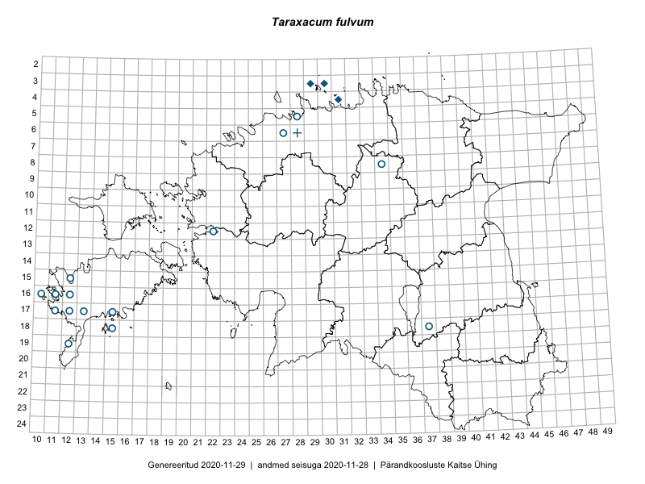

Taraxacum fulvum — ruuge võilill
Asteraceae :: Taraxacum fulvum Raunk. (42)

Kaart põhineb 42 kirjel:
herbaareksemplare 42
Taime kaasaegsed ja ajaloolised leiukohad asuvad 19 ruudus.
Tingmärgid ja ruutude arvud periooditi (U1 / V2 )
█ 2006–2020 (0/–)
◆/◇ 1971–2005 (3/0)
○ 1921–1970 (15/0)
+ kuni 1920 (1/0)
× hävinud (–/0)
? kaheldav (–/0)
| Ruut | Leidja(d) | Leiuaeg | Kirje |
|---|---|---|---|
| 17-11 | Bernhard Saarson | 1937-05-23 | TAA0009406: Taraxacum fulvum Raunk. |
| 12-22 | Haide-Ene Rebassoo | 1967-06-14 | TAA0009407: Taraxacum fulvum Raunk. |
| 17-13 | Bernhard Saarson | 1937-06-05 | TAA0009408: Taraxacum fulvum Raunk. |
| 16-12 | Bernhard Saarson | 1938-05-20 | TAA0009409: Taraxacum fulvum Raunk. |
| 17-15 | Bernhard Saarson | 1937-05-27 | TAA0009410: Taraxacum fulvum Raunk. |
| 17-11 | Bernhard Saarson | 1937-05-29 | TAA0009411: Taraxacum fulvum Raunk. |
| 17-11 | Bernhard Saarson | 1937-05-25 | TAA0009413: Taraxacum fulvum Raunk. |
| 17-11 | Bernhard Saarson | 1937-06-01 | TAA0009414: Taraxacum fulvum Raunk. |
| 17-11 | Bernhard Saarson | 1937-06-01 | TAA0009416: Taraxacum fulvum Raunk. |
| 18-15 | Bernhard Saarson | 1938-06-04 | TAA0009417: Taraxacum fulvum Raunk. |
| 18-15 | Bernhard Saarson | 1938-06-04 | TAA0009418: Taraxacum fulvum Raunk. |
| 04-31 | Tõnu Ploompuu | 1991-05-21 | TALL C003104: Taraxacum fulvum Raunk. |
| 04-31 | Tõnu Ploompuu | 1991-05-22 | TALL C003105: Taraxacum fulvum Raunk. |
| 06-27 | G. Marklund | 1930-05-31 | TU268469: Taraxacum fulvum Raunk. |
| 15-12 | B. Saarsoo | 1938-06-06 | TU268470: Taraxacum fulvum Raunk. |
| 18-37 | K. Eichwald | 1939-06-18 | TU268471: Taraxacum fulvum Raunk. |
| 18-37 | K. Eichwald | 1939-06-18 | TU268472: Taraxacum fulvum Raunk. |
| 18-37 | K. Eichwald | 1939-06-17 | TU268473: Taraxacum fulvum Raunk. |
| 18-37 | K. Eichwald | 1939-06-17 | TU268474: Taraxacum fulvum Raunk. |
| 17-11 | B. Saarsoo | 1937-06-01 | TU268476: Taraxacum fulvum Raunk. |
| 17-11 | B. Saarsoo | 1937-05-25 | TU268477: Taraxacum fulvum Raunk. |
| 08-34 | K. Eichwald | 1939-06-24 | TU268478: Taraxacum fulvum Raunk. |
| 17-11 | B. Saarsoo | 1937-05-23 | TU268479: Taraxacum fulvum Raunk. |
| 16-12 | B. Saarsoo | 1939-05-23 | TU268480: Taraxacum fulvum Raunk. |
| 16-10 | B. Saarsoo | 1939-05-21 | TU268481: Taraxacum fulvum Raunk. |
| 19-12 | B. Saarsoo | 1939-06-08 | TU268482: Taraxacum fulvum Raunk. |
| 18-15 | B. Saarsoo | 1938-06-04 | TU268483: Taraxacum fulvum Raunk. |
| 18-37 | K. Eichwald | 1939-06-18 | TU268484: Taraxacum fulvum Raunk. |
| 18-37 | K. Eichwald | 1938-06-05 | TU268485: Taraxacum fulvum Raunk. |
| 16-11 | B. Saarsoo | 1939-06-06 | TU268486: Taraxacum fulvum Raunk. |
| 17-11 | B. Saarsoo | 1937-06-01 | TU268489: Taraxacum fulvum Raunk. |
| 17-12 | B. Saarsoo | 1938-06-12 | TU268490: Taraxacum fulvum Raunk. |
| 17-11 | B. Saarsoo | 1937-05-23 | TU268491: Taraxacum fulvum Raunk. |
| 18-37 | K. Eichwald | 1938-06-05 | TU268493: Taraxacum fulvum Raunk. |
| 18-37 | K. Eichwald | 1938-06-05 | TU268494: Taraxacum fulvum Raunk. |
| 18-37 | K. Eichwald | 1938-06-05 | TU268495: Taraxacum fulvum Raunk. |
| 06-28 | Rudolph Lehbert | 1912-05-30 | TAM0063067: Taraxacum fulvum Raunk. |
| 05-28 | Hugo Salasoo | 1936-06-06 | TAM0005798: Taraxacum fulvum Raunk. |
| 03-30 | Tõnu Ploompuu | 1993-05-25 | TALL C007412: Taraxacum fulvum Raunk. |
| 03-30 | Tõnu Ploompuu | 1993-05-25 | TALL C007411: Taraxacum fulvum Raunk. |
| 03-29 | Tõnu Ploompuu | 1993-05-25 | TALL C007410: Taraxacum fulvum Raunk. |
| 03-29 | Tõnu Ploompuu | 1993-05-25 | TALL C007409: Taraxacum fulvum Raunk. |
Ruutude arv uue atlase andmekogu järgi. Muuhulgas arvestab vanemat herbaariumi, 2005. aasta atlase välitöölehtedelt uuesti digitaliseeritud andmeid jne. Uue atlase andmekogust pärinevad andmed on kaardile kantud siniste sümbolitega.↩︎
Ruutude arv 2005. aasta atlase (Kukk, T., Kull, T., Eesti taimede levikuatlas. Eesti Maaülikool, Põllumajandus- ja Keskkonnainstituut, Tartu, 2005) järgi. Andmeallikana on kasutatud levik.exe programmi, kus igas ruudus on registreeritud vaid uusim leid. Seetõttu on vanemate perioodide kohta andmed puudulikud. Kasutatud levik.exe andmestikus leidub mõningaid kõrvalekaldeid atlase trükis ilmunud versioonist, sagedamini tarnade ja käpaliste seas. Lisaks leidub selles andmestikus valik liike (peamiselt väheste leidudega tulnuktaimed), mille kaarte trükis ei avaldatud. Vana atlase andmed ruutudest, milles ei ole uue atlase andmekogus leide enne 2006. aastat, on kaardil esitatud punaste sümbolitega. Vana atlase andmetel hävinud ja kaheldavaid leiukohti pole hilisemate (taas)leidude põhjal korrigeeritud.↩︎